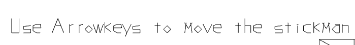

The WebGL resume has two versions. One for mobile and one for desktop!
Check it out on GitHub!
Premise:
I wanted to create an in-browser interactive version of my resume using WebGl! The players navigrates through the world as a stick man controlled with the arrow keys and as they pass certain checkpoints, the system renders different sections of my resume. There's also a boss fight at the end that the player defeats by jumping on it's head. If the player defeats the boss and walks off the right edge of the screen, they are re-directed to my main website.
How I built it:
I decided to built this entirely using webGL line rendering. Most of it was fairly simple except for drawing the text. I wrote my own entire library for drawing line-based text! That's how I can get the really cool effect where it looks like the text is being drawn in line-by-line. I literally sat down and coded every character in the English language I needed by hand. You can see the code here: webgl/textRenderer.html

An example of some pretty funky text rendering using hand-coded lines:

Mobile Version:
Recently, I upddated this project to add a mobile version. Since the desktop version relies on a keyboard, I had to add onscreen buttons and some logic to react to user touch events. The game will automatically switch to the mobile version if opened on a mobile phone or tablet.